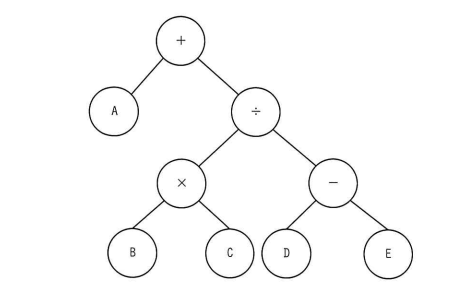

各ノードがもつデータを出力する再帰処理 f(ノードn) を定義した。この処理を，図の2分木の根（最上位のノード）から始めたときの出力はどれか。
〔f(ノードn)の定義〕
【2分木の構造】
+
/ \
A ÷
/ \
× -
/ \ / \
B C D E
ア ＋÷－ED×CBA
イ ABC×DE－÷＋
ウ E－D÷C×B＋A
エ ED－CB×÷A＋

エ：ED－CB×÷A＋
| 選択肢 | 内容 | 補足 |
|---|---|---|
| ア | ＋÷－ED×CBA | 根を最初に出力する前行順（先行順）の並びに近く、定義の「右→左→中（自身）」の出力順序と一致しない |
| イ | ABC×DE－÷＋ | 左の子から先に処理する順（左→右→中）に相当し、定義にある「右の子を先に実行」という手順と一致しない |
| ウ | E－D÷C×B＋A | EとDの出力順序や全体の並びが、右→左→中で実際に辿った場合の正しい順序と一致しない |
| エ | ED－CB×÷A＋ | 正解。根「＋」から右の子「÷」→さらに右の子「－」→さらに右の子「E」（子なしのため出力）→左の子「D」（出力）→「－」自身を出力→「÷」の左の子「×」→「C」出力→「B」出力→「×」自身を出力→「÷」自身を出力→根「＋」の左の子「A」を出力→最後に根「＋」自身を出力、という順にbash_toolでのシミュレーションでも完全に一致する |
出典：2024年度 春期 応用情報技術者試験 午前 問6（IPA）